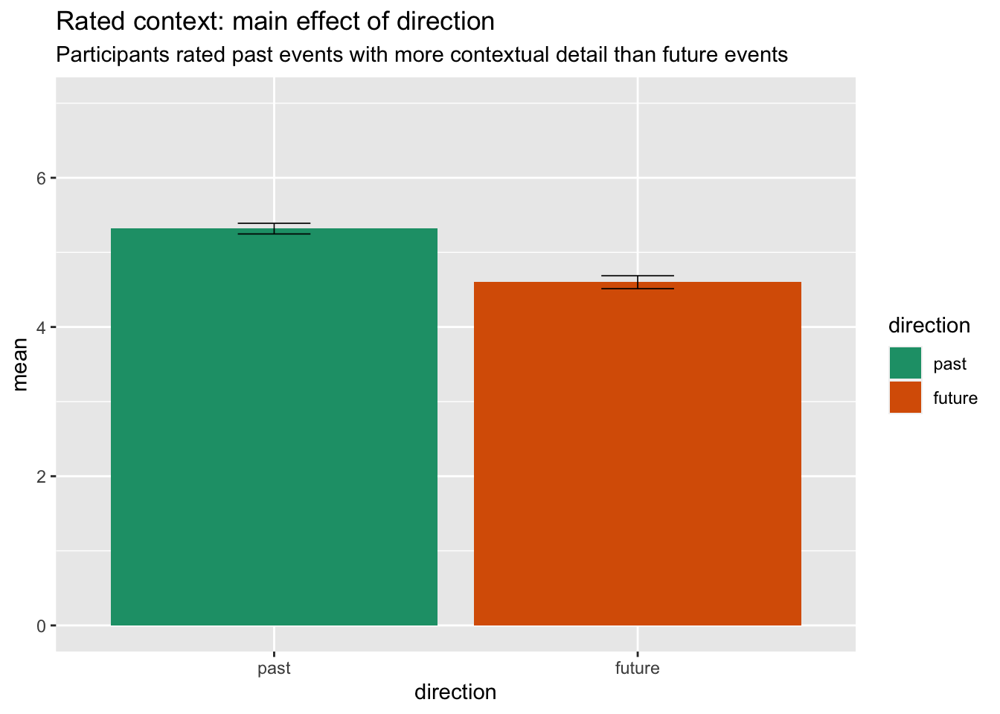

phenom anovas
Jen Richmond
09/09/2020
Last updated: 2020-09-14
Checks: 6 1
Knit directory: KelvinSarahJennyJess/
This reproducible R Markdown analysis was created with workflowr (version 1.6.2). The Checks tab describes the reproducibility checks that were applied when the results were created. The Past versions tab lists the development history.
The R Markdown is untracked by Git. To know which version of the R Markdown file created these results, you’ll want to first commit it to the Git repo. If you’re still working on the analysis, you can ignore this warning. When you’re finished, you can run wflow_publish to commit the R Markdown file and build the HTML.
Great job! The global environment was empty. Objects defined in the global environment can affect the analysis in your R Markdown file in unknown ways. For reproduciblity it’s best to always run the code in an empty environment.
The command set.seed(20200901) was run prior to running the code in the R Markdown file. Setting a seed ensures that any results that rely on randomness, e.g. subsampling or permutations, are reproducible.
Great job! Recording the operating system, R version, and package versions is critical for reproducibility.
Nice! There were no cached chunks for this analysis, so you can be confident that you successfully produced the results during this run.
Great job! Using relative paths to the files within your workflowr project makes it easier to run your code on other machines.
Great! You are using Git for version control. Tracking code development and connecting the code version to the results is critical for reproducibility.
The results in this page were generated with repository version 55f56f9. See the Past versions tab to see a history of the changes made to the R Markdown and HTML files.
Note that you need to be careful to ensure that all relevant files for the analysis have been committed to Git prior to generating the results (you can use wflow_publish or wflow_git_commit). workflowr only checks the R Markdown file, but you know if there are other scripts or data files that it depends on. Below is the status of the Git repository when the results were generated:
Ignored files:
Ignored: .DS_Store
Ignored: .Rproj.user/
Ignored: Manuscripts/
Ignored: OLDAnalysis/
Ignored: Prism & Graphs/
Untracked files:
Untracked: analysis/mtt_study3_analysis3_phenom.Rmd
Unstaged changes:
Modified: analysis/index.Rmd
Note that any generated files, e.g. HTML, png, CSS, etc., are not included in this status report because it is ok for generated content to have uncommitted changes.
There are no past versions. Publish this analysis with wflow_publish() to start tracking its development.
load packages
library(tidyverse)
library(here)
library(afex)NOTES re how to do repeated measures ANOVA In R here http://jenrichmond.rbind.io/post/anova-options/
read in data
phenom <- read_csv(here("data", "study3_phenom.csv"))Filter only pp who are good, fix data types
phenom_complete <- phenom %>%
filter(identifier == "Good") %>%
arrange(px_no, valence, direction, event)
phenom_complete <- phenom_complete %>%
mutate_if(is.character, as.factor)
phenom_complete$px_no <- as.factor(phenom_complete$px_no)
phenom_complete$valence <- fct_relevel(phenom_complete$valence,
c("positive", "neutral", "negative"))
phenom_complete$group <- fct_relevel(phenom_complete$group,
c("CON", "ANX"))
phenom_complete$direction <- fct_relevel(phenom_complete$direction,
c("past", "future"))Phenom variables
- vividness
- pre/re-experiencing
- sensory details
- individual sensory items (sight, sound, smell, taste) averaged into single sensoty detail rating for each event
- contextual details
- ratings of clarity of location and clarity of spatial arrangement of objects averaged into combined contextual details rating for each event
- perspective
- ratio calculated by dividing rating for “seen through my own eyes” and “as if I was a fly on the wall” to determine field or observer perspective. Higher ratios indicate field perspecitve; lower ratios field perspective
- reaction
- combined reaction score calculated by averaging intensity and physical reactions
- coherence
- importance
All phenomenological ratings averaged across event type (i.e. future neutral, future positive)
Each rating is analysed using repeated measures ANOVA with effects of direction (past, future), valence (pos, neu, neg) and group (control, anxiety). Here I will replicate the original analysis first using the afex package.
afex1 <- aov_ez(“px_no”, “score”, data_long, between = “group”, within = c(“direction”, “valence”))
Then try linear mixed models which will allow us to deal with the missing data problem, and add random intercepts for both participant and event, along with random slopes for main effects.
Thought- in the original analysis, did we differentiate between events that were specific vs. not?
VIVIDNESS
Main effect of direction, no effects involving valence or group.
vivid_data <- phenom_complete %>%
filter(rating == "vivid")
vivid_aov <- afex::aov_ez("px_no", "score",
vivid_data,
between = "group",
within = c("direction", "valence"))Warning: More than one observation per cell, aggregating the data using
mean (i.e, fun_aggregate = mean)!Contrasts set to contr.sum for the following variables: groupnice(vivid_aov)Anova Table (Type 3 tests)
Response: score
Effect df MSE F ges p.value
1 group 1, 31 4.36 1.82 .03 .19
2 direction 1, 31 0.84 29.45 *** .08 <.0001
3 group:direction 1, 31 0.84 0.15 .0004 .71
4 valence 1.68, 52.15 1.46 1.54 .01 .22
5 group:valence 1.68, 52.15 1.46 1.13 .009 .32
6 direction:valence 1.90, 58.80 0.96 2.35 .01 .11
7 group:direction:valence 1.90, 58.80 0.96 1.04 .006 .36
---
Signif. codes: 0 '***' 0.001 '**' 0.01 '*' 0.05 '+' 0.1 ' ' 1
Sphericity correction method: GG Plot main effect of direction
phenom_complete %>%
filter(rating == "vivid") %>%
group_by(direction) %>%
summarise(mean = mean(score, na.rm = TRUE),
sd = sd(score, na.rm = TRUE),
n = n(),
stderr = sd/sqrt(n)) %>%
ggplot(aes(x = direction, y = mean, fill = direction)) +
geom_col() +
geom_errorbar(aes(ymin=mean-stderr, ymax=mean+stderr),
size=.3, # Thinner lines
width=.2,
position=position_dodge(.9)) +
ylim(0, 7) +
scale_fill_brewer(palette="Dark2") +
labs(title = "Rated vividness: main effect of direction", subtitle = "Participants rate past events as more vivid than future events")`summarise()` ungrouping output (override with `.groups` argument)PRE-RE experiencing
Main effect of direction, no effects involving valence or group.
prere_data <- phenom_complete %>%
filter(rating == "prere")
prere_aov <- afex::aov_ez("px_no", "score",
prere_data,
between = "group",
within = c("direction", "valence"))Warning: More than one observation per cell, aggregating the data using
mean (i.e, fun_aggregate = mean)!Contrasts set to contr.sum for the following variables: groupnice(prere_aov)Anova Table (Type 3 tests)
Response: score
Effect df MSE F ges p.value
1 group 1, 31 5.00 0.01 .0001 .93
2 direction 1, 31 0.87 16.44 *** .04 .0003
3 group:direction 1, 31 0.87 0.16 .0005 .69
4 valence 1.70, 52.71 1.73 1.16 .01 .32
5 group:valence 1.70, 52.71 1.73 0.26 .002 .74
6 direction:valence 2.00, 61.93 0.63 2.32 .009 .11
7 group:direction:valence 2.00, 61.93 0.63 0.43 .002 .65
---
Signif. codes: 0 '***' 0.001 '**' 0.01 '*' 0.05 '+' 0.1 ' ' 1
Sphericity correction method: GG Plot main effect of direction
phenom_complete %>%
filter(rating == "prere") %>%
group_by(direction) %>%
summarise(mean = mean(score, na.rm = TRUE),
sd = sd(score, na.rm = TRUE),
n = n(),
stderr = sd/sqrt(n)) %>%
ggplot(aes(x = direction, y = mean, fill = direction)) +
geom_col() +
geom_errorbar(aes(ymin=mean-stderr, ymax=mean+stderr),
size=.3, # Thinner lines
width=.2,
position=position_dodge(.9)) +
ylim(0, 7) +
scale_fill_brewer(palette="Dark2") +
labs(title = "Rated pre/re experiencing: main effect of direction", subtitle = "Participants report a greater sense of reexp for past than preexp for future events")`summarise()` ungrouping output (override with `.groups` argument)SENSORY
Main effect of direction, no effects involving valence or group.
sensory_data <- phenom_complete %>%
filter(rating %in% c("sense1", "sense2")) %>%
group_by(px_no, group, direction, valence) %>%
summarise(score = mean(score))`summarise()` regrouping output by 'px_no', 'group', 'direction' (override with `.groups` argument)sensory_aov <- afex::aov_ez("px_no", "score",
sensory_data,
between = "group",
within = c("direction", "valence"))Contrasts set to contr.sum for the following variables: groupnice(sensory_aov)Anova Table (Type 3 tests)
Response: score
Effect df MSE F ges p.value
1 group 1, 31 7.22 0.16 .003 .69
2 direction 1, 31 1.10 5.90 * .02 .02
3 group:direction 1, 31 1.10 2.43 .007 .13
4 valence 1.60, 49.57 1.45 1.81 .01 .18
5 group:valence 1.60, 49.57 1.45 0.29 .002 .70
6 direction:valence 1.83, 56.77 0.77 2.35 .009 .11
7 group:direction:valence 1.83, 56.77 0.77 0.27 .001 .75
---
Signif. codes: 0 '***' 0.001 '**' 0.01 '*' 0.05 '+' 0.1 ' ' 1
Sphericity correction method: GG Plot main effect of direction
phenom_complete %>%
filter(rating %in% c("sense1", "sense2")) %>%
group_by(direction) %>%
summarise(mean = mean(score, na.rm = TRUE),
sd = sd(score, na.rm = TRUE),
n = n(),
stderr = sd/sqrt(n)) %>%
ggplot(aes(x = direction, y = mean, fill = direction)) +
geom_col() +
geom_errorbar(aes(ymin=mean-stderr, ymax=mean+stderr),
size=.3, # Thinner lines
width=.2,
position=position_dodge(.9)) +
ylim(0, 7) +
scale_fill_brewer(palette="Dark2") +
labs(title = "Rated sensory: main effect of direction", subtitle = "Participants rated past events as having higher sensory details than future events")`summarise()` ungrouping output (override with `.groups` argument)CONTEXT
Main effect of direction, no effects involving valence or group.
context_data <- phenom_complete %>%
filter(rating %in% c("context1", "context2")) %>%
group_by(px_no, group, direction, valence) %>%
summarise(score = mean(score))`summarise()` regrouping output by 'px_no', 'group', 'direction' (override with `.groups` argument)context_aov <- afex::aov_ez("px_no", "score",
context_data,
between = "group",
within = c("direction", "valence"))Contrasts set to contr.sum for the following variables: groupnice(context_aov)Anova Table (Type 3 tests)
Response: score
Effect df MSE F ges p.value
1 group 1, 31 5.08 1.65 .03 .21
2 direction 1, 31 1.04 21.56 *** .07 <.0001
3 group:direction 1, 31 1.04 1.72 .006 .20
4 valence 1.63, 50.60 1.42 1.11 .008 .33
5 group:valence 1.63, 50.60 1.42 0.42 .003 .62
6 direction:valence 1.83, 56.66 0.87 0.68 .003 .50
7 group:direction:valence 1.83, 56.66 0.87 0.57 .003 .55
---
Signif. codes: 0 '***' 0.001 '**' 0.01 '*' 0.05 '+' 0.1 ' ' 1
Sphericity correction method: GG plot main effect of direction
phenom_complete %>%
filter(rating %in% c("context1", "context2")) %>%
group_by(direction) %>%
summarise(mean = mean(score, na.rm = TRUE),
sd = sd(score, na.rm = TRUE),
n = n(),
stderr = sd/sqrt(n)) %>%
ggplot(aes(x = direction, y = mean, fill = direction)) +
geom_col() +
geom_errorbar(aes(ymin=mean-stderr, ymax=mean+stderr),
size=.3, # Thinner lines
width=.2,
position=position_dodge(.9)) +
ylim(0, 7) +
scale_fill_brewer(palette="Dark2") +
labs(title = "Rated context: main effect of direction", subtitle = "Participants rated past events with more contextual detail than future events")`summarise()` ungrouping output (override with `.groups` argument)
PERSPECTIVE
No main effects or interactions.
perspective_data <- phenom_complete %>%
filter(rating == "ratio")
perspective_aov <- afex::aov_ez("px_no", "score",
perspective_data,
between = "group",
within = c("direction", "valence"))Warning: More than one observation per cell, aggregating the data using
mean (i.e, fun_aggregate = mean)!Warning: Missing values for following ID(s):
1023, 1026
Removing those cases from the analysis.Contrasts set to contr.sum for the following variables: groupnice(perspective_aov)Anova Table (Type 3 tests)
Response: score
Effect df MSE F ges p.value
1 group 1, 29 9.23 0.00 <.0001 .96
2 direction 1, 29 1.00 2.26 .005 .14
3 group:direction 1, 29 1.00 0.82 .002 .37
4 valence 1.40, 40.46 2.17 0.63 .004 .48
5 group:valence 1.40, 40.46 2.17 0.83 .005 .41
6 direction:valence 1.83, 53.08 1.35 0.81 .004 .44
7 group:direction:valence 1.83, 53.08 1.35 2.67 + .01 .08
---
Signif. codes: 0 '***' 0.001 '**' 0.01 '*' 0.05 '+' 0.1 ' ' 1
Sphericity correction method: GG naniar::vis_miss(perspective_data) # why are some pp missing ratio scoresCheck calculations on perspective ratio
perspective <- phenom_complete %>%
filter(rating %in% c("perspective1", "perspective2", "ratio"))
persp_wide <- perspective %>%
pivot_wider(names_from = rating,
values_from = score) %>%
mutate(ratio_test = perspective1/perspective2)Yup calculation seems fine.
REACTION
Main effect of direction, valence, and direction x valence interaction. No effects involving group.
reaction_data <- phenom_complete %>%
filter(rating == "reaction")
reaction_aov <- afex::aov_ez("px_no", "score",
reaction_data,
between = "group",
within = c("direction", "valence"))Warning: More than one observation per cell, aggregating the data using
mean (i.e, fun_aggregate = mean)!Contrasts set to contr.sum for the following variables: groupnice(reaction_aov)Anova Table (Type 3 tests)
Response: score
Effect df MSE F ges p.value
1 group 1, 31 13.81 0.34 .007 .57
2 direction 1, 31 1.68 9.34 ** .02 .005
3 group:direction 1, 31 1.68 0.02 <.0001 .89
4 valence 1.80, 55.70 1.39 3.97 * .02 .03
5 group:valence 1.80, 55.70 1.39 0.08 .0003 .91
6 direction:valence 1.74, 54.07 1.14 4.42 * .01 .02
7 group:direction:valence 1.74, 54.07 1.14 0.23 .0007 .76
---
Signif. codes: 0 '***' 0.001 '**' 0.01 '*' 0.05 '+' 0.1 ' ' 1
Sphericity correction method: GG Plot valence x direction
phenom_complete %>%
filter(rating == "reaction") %>%
group_by(direction, valence) %>%
summarise(mean = mean(score, na.rm = TRUE),
sd = sd(score, na.rm = TRUE),
n = n(),
stderr = sd/sqrt(n)) %>%
ggplot(aes(x = valence, y = mean, fill = valence)) +
geom_col() +
geom_errorbar(aes(ymin=mean-stderr, ymax=mean+stderr),
size=.3, # Thinner lines
width=.2,
position=position_dodge(.9)) +
facet_wrap(~ direction) +
ylim(0, 7) +
scale_fill_brewer(palette="Dark2") +
labs(title = "Rated reaction (intensity + physical reaction): direction x valence", subtitle = "negative past events more intense than pos/neu, maybe no difference for future?")`summarise()` regrouping output by 'direction' (override with `.groups` argument)
COHERENCE
Main effect of group and main effect of direction. No interaction.
coh_data <- phenom_complete %>%
filter(rating == "coh")
coh_aov <- afex::aov_ez("px_no", "score",
coh_data,
between = "group",
within = c("direction", "valence"))Warning: More than one observation per cell, aggregating the data using
mean (i.e, fun_aggregate = mean)!Contrasts set to contr.sum for the following variables: groupnice(coh_aov)Anova Table (Type 3 tests)
Response: score
Effect df MSE F ges p.value
1 group 1, 31 8.22 6.97 * .11 .01
2 direction 1, 31 1.15 15.88 *** .04 .0004
3 group:direction 1, 31 1.15 0.43 .001 .51
4 valence 1.86, 57.55 1.59 1.85 .01 .17
5 group:valence 1.86, 57.55 1.59 0.49 .003 .60
6 direction:valence 1.96, 60.79 1.13 0.71 .003 .49
7 group:direction:valence 1.96, 60.79 1.13 0.40 .002 .67
---
Signif. codes: 0 '***' 0.001 '**' 0.01 '*' 0.05 '+' 0.1 ' ' 1
Sphericity correction method: GG Plot main effect of group
phenom_complete %>%
filter(rating == "coh") %>%
group_by(group) %>%
summarise(mean = mean(score, na.rm = TRUE),
sd = sd(score, na.rm = TRUE),
n = n(),
stderr = sd/sqrt(n)) %>%
ggplot(aes(x = group, y = mean, fill = group)) +
geom_col() +
geom_errorbar(aes(ymin=mean-stderr, ymax=mean+stderr),
size=.3, # Thinner lines
width=.2,
position=position_dodge(.9)) +
ylim(0, 7) +
scale_fill_brewer(palette="Dark2") +
labs(title = "Rated coherence: main effect of group", subtitle = "people with anxiety rate events as MORE coherent than controls")`summarise()` ungrouping output (override with `.groups` argument)Plot main effect of direction
phenom_complete %>%
filter(rating == "coh") %>%
group_by(direction) %>%
summarise(mean = mean(score, na.rm = TRUE),
sd = sd(score, na.rm = TRUE),
n = n(),
stderr = sd/sqrt(n)) %>%
ggplot(aes(x = direction, y = mean, fill = direction)) +
geom_col() +
geom_errorbar(aes(ymin=mean-stderr, ymax=mean+stderr),
size=.3, # Thinner lines
width=.2,
position=position_dodge(.9)) +
ylim(0, 7) +
scale_fill_brewer(palette="Dark2") +
labs(title = "Rated coherence: main effect of direction", subtitle = "past events rated as more coherent than future")`summarise()` ungrouping output (override with `.groups` argument)IMPORTANCE
Main effect of direction- I thought the original analysis showed that there was a group x direction interaction in that those with anxiety rated future events more important.
impt_data <- phenom_complete %>%
filter(rating == "impt")
impt_aov <- afex::aov_ez("px_no", "score",
impt_data,
between = "group",
within = c("direction", "valence"))Warning: More than one observation per cell, aggregating the data using
mean (i.e, fun_aggregate = mean)!Contrasts set to contr.sum for the following variables: groupnice(impt_aov)Anova Table (Type 3 tests)
Response: score
Effect df MSE F ges p.value
1 group 1, 31 8.92 1.19 .02 .28
2 direction 1, 31 1.02 23.78 *** .05 <.0001
3 group:direction 1, 31 1.02 2.57 .005 .12
4 valence 1.70, 52.71 2.01 1.02 .007 .36
5 group:valence 1.70, 52.71 2.01 1.94 .01 .16
6 direction:valence 1.93, 59.96 1.20 2.24 .01 .12
7 group:direction:valence 1.93, 59.96 1.20 1.13 .005 .33
---
Signif. codes: 0 '***' 0.001 '**' 0.01 '*' 0.05 '+' 0.1 ' ' 1
Sphericity correction method: GG plot main effect direction
phenom_complete %>%
filter(rating == "impt") %>%
group_by(direction) %>%
summarise(mean = mean(score, na.rm = TRUE),
sd = sd(score, na.rm = TRUE),
n = n(),
stderr = sd/sqrt(n)) %>%
ggplot(aes(x = direction, y = mean, fill = direction)) +
geom_col() +
geom_errorbar(aes(ymin=mean-stderr, ymax=mean+stderr),
size=.3, # Thinner lines
width=.2,
position=position_dodge(.9)) +
ylim(0, 6) +
scale_fill_brewer(palette="Dark2") +
labs(title = "Rated importance: main effect direction", subtitle= "past events rated as more important")`summarise()` ungrouping output (override with `.groups` argument)Issues to resolve
- missing perspective ratio scores
- importance ratings, group x direction??
sessionInfo()R version 3.5.1 (2018-07-02)
Platform: x86_64-apple-darwin15.6.0 (64-bit)
Running under: macOS Sierra 10.12.6
Matrix products: default
BLAS: /Library/Frameworks/R.framework/Versions/3.5/Resources/lib/libRblas.0.dylib
LAPACK: /Library/Frameworks/R.framework/Versions/3.5/Resources/lib/libRlapack.dylib
locale:
[1] en_AU.UTF-8/en_AU.UTF-8/en_AU.UTF-8/C/en_AU.UTF-8/en_AU.UTF-8
attached base packages:
[1] stats graphics grDevices utils datasets methods base
other attached packages:
[1] afex_0.25-1 lme4_1.1-21 Matrix_1.2-14 here_0.1
[5] forcats_0.5.0 stringr_1.4.0 dplyr_1.0.1 purrr_0.3.3
[9] readr_1.3.1 tidyr_1.1.0 tibble_3.0.3 ggplot2_3.3.2
[13] tidyverse_1.3.0
loaded via a namespace (and not attached):
[1] TH.data_1.0-9 minqa_1.2.4 colorspace_1.4-1
[4] ellipsis_0.3.1 rio_0.5.16 visdat_0.5.2
[7] rprojroot_1.3-2 estimability_1.3 fs_1.4.1
[10] rstudioapi_0.11.0-9000 farver_2.0.3 fansi_0.4.1
[13] mvtnorm_1.1-0 lubridate_1.7.4 xml2_1.3.2
[16] codetools_0.2-15 splines_3.5.1 knitr_1.23
[19] jsonlite_1.7.0 workflowr_1.6.2 nloptr_1.2.2.1
[22] naniar_0.4.1 broom_0.7.0 dbplyr_1.4.4
[25] compiler_3.5.1 httr_1.4.1 emmeans_1.4.4
[28] backports_1.1.8 assertthat_0.2.1 cli_2.0.2
[31] later_1.1.0.1 htmltools_0.5.0 tools_3.5.1
[34] lmerTest_3.1-0 coda_0.19-3 gtable_0.3.0
[37] glue_1.4.1 reshape2_1.4.3 Rcpp_1.0.5
[40] carData_3.0-2 cellranger_1.1.0 vctrs_0.3.2
[43] nlme_3.1-137 xfun_0.8 openxlsx_4.1.0.1
[46] rvest_0.3.6 lifecycle_0.2.0 MASS_7.3-51.1
[49] zoo_1.8-4 scales_1.1.1 hms_0.5.3
[52] promises_1.1.1 parallel_3.5.1 sandwich_2.5-0
[55] RColorBrewer_1.1-2 yaml_2.2.1 curl_4.3
[58] stringi_1.4.6 boot_1.3-20 zip_2.0.4
[61] rlang_0.4.7 pkgconfig_2.0.3 evaluate_0.14
[64] lattice_0.20-35 labeling_0.3 tidyselect_1.1.0
[67] plyr_1.8.6 magrittr_1.5 R6_2.4.1
[70] generics_0.0.2 multcomp_1.4-8 DBI_1.0.0
[73] pillar_1.4.6 haven_2.3.1 foreign_0.8-72
[76] withr_2.2.0 survival_2.43-1 abind_1.4-5
[79] modelr_0.1.8 crayon_1.3.4 car_3.0-3
[82] rmarkdown_1.15 grid_3.5.1 readxl_1.3.1
[85] data.table_1.12.8 blob_1.2.1 git2r_0.27.1
[88] reprex_0.3.0 digest_0.6.25 xtable_1.8-4
[91] httpuv_1.5.2 numDeriv_2016.8-1.1 munsell_0.5.0